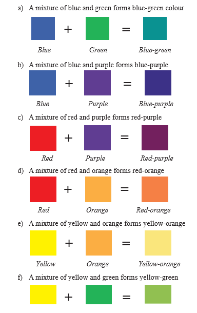

Tertiary or intermediate colours: These are colours made by mixing a primary with its neighbouring secondary colour. Tertiary colours that are made in this process include blue-green, blue-purple, red-purple, red-orange, yellow-orange, and yellow-green. Figure 3.7 shows the tertiary colour formation.
